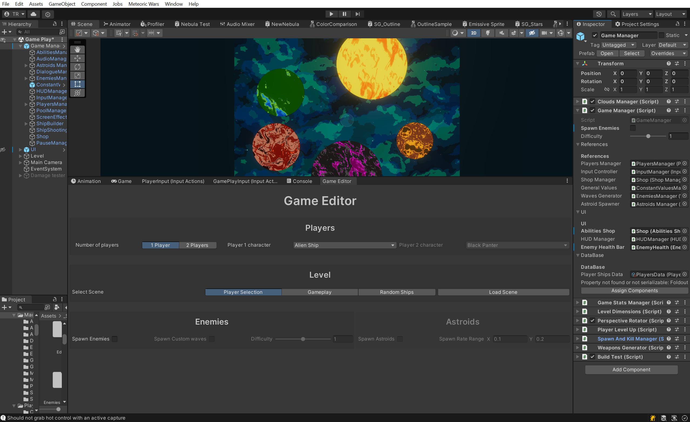
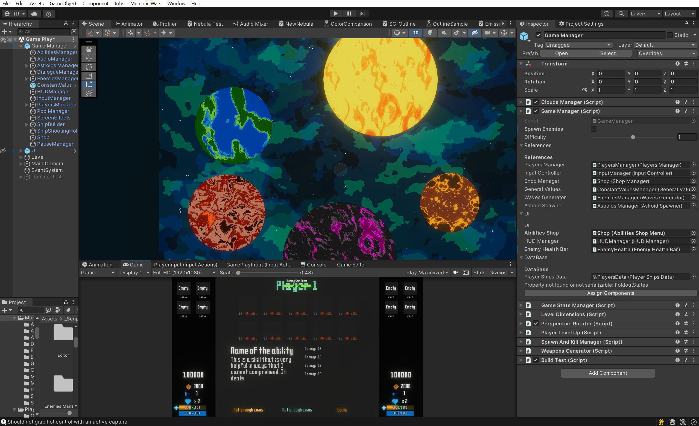
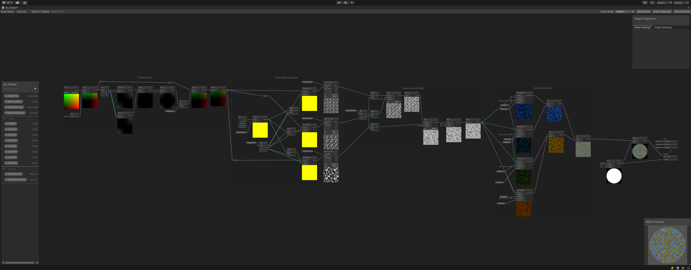
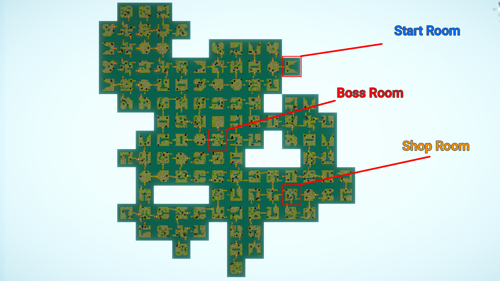

Hello there, Adventurer! My name is Ty, and I'm deeply passionate about game design and development. A self-taught developer,
I’ve been honing my skills for nearly four years, with several games in development, including an
upcoming roguelike title.
After completing my Information Technology degree in 2021, I began pursuing a Master of Digital
Media.
I have experience as a graphic designer and was involved in a YouTube channel where we shared
tutorials on remaking classic games with modern visuals and mechanics, though this project is
currently on hold due to my studies.
I primarily use Unity for my projects and am expanding my skills into Unreal Engine to refine my
C++.
I look forward to your feedback and hope you enjoy exploring my work!
The Widow is my first personal big project that I started working on part-time in 2020 until the end of
2021. The inspiration to work on this project was out of my love for the survival horror genre and was an
opportunity for me to learn more about Unity by implementing interconnected game systems that worked
together with the player character and the enemy’s AI.
I had plans on releasing the game, but realized I’d need more assets than I was able to provide, so I
stopped working on it when the game got to full playable state.
Concept
The Widow is a first-person survival horror game where the player, a detective, investigates the mysterious
death of a woman named Ms. Romanov, only to find themselves trapped in the house, and haunted by an unknown
presence.
Game Systems
"The Widow" was my chance to implement a couple of systems, some of which are:
Player Interaction System: Allows the player to interact with
predetermined interactables, including doors, collectibles, and puzzles.
Camera Effects System: Features dynamic camera effects that respond
to the player’s state. For example, the view gets distorted when the player runs out of stamina, and the
camera’s focus changes based on what object the player is looking at.
Puzzles: Include puzzles with random solutions that challenge
players to think every time they solve them. For instance, the piano puzzle, which is solved by playing
a certain combination of keys, has a unique solution in every run, and the solution is embedded in a
different note that the player finds before coming across the puzzle.
Dialogue and Tips: A dialogue system adds a narrative to the game,
and a tips display system teaches players how to interact with the game.
Enemy AI: The entity chasing the player uses a finite state machine
to look for and hunt down the player. It has a line of sight as well as the ability to hear the player,
depending on the player's movements. The slower the player moves, the less likely it is for the enemy to
hear them.
Hide Spots: Some spots can render the player invisible if the
entity didn’t see the player hide there.
Inventory System: The player can collect and use items in the
inventory. Items range from a flashlight and batteries to keys, energy drinks, puzzle pieces, and more.
Jump-scares System: Before the player encounters the entity, random
jump-scares might occur in certain areas, with the entity either passing by or staring at the player
from a distance before walking away.
Start and End Menu: Includes settings for brightness and audio
volume.
Audio Management: A system that adds transitions to the music being
played in the background depending on the situation.
Item Spawning: Collectibles are spawned randomly and are
semi-equally distributed across the level.
Meteoric Wars was my first attempt to work on a rogue-like game. The idea was inspired by Sonic Wings (a
game I played a lot when I was young) mixed with my love for pixel art and rogue-like games even though the
latter wasn’t a part of the plan initially.
Concept
Meteoric Wars is a vertical scrolling shoot ‘em up rogue-like video game that takes place in a galaxy that’s
been taken over by mutated machinery and aliens. The player has to stop the mutation by destroying the black
hole generators that cause it.
The player can choose from 5 different unique heroes, each equipped with a special ship and unique skills.
The enemies are different from run to run in every aspect. So the player has to rely on skill, rather than
memory.
Game Systems
Here's a list of some the systems implemented for the game that I'd like to highlight:
Procedural spaceships generation: All the enemies in the game are
procedurally generated except for bosses and the shop (which you can optionally fight.) This feature
came to life due to my lack of artistic skills. I wrote a simple algorithm that takes predefined
spaceship body parts (body, wings, and tail) randomizes their dimensions, colors and numbers, and mashes
it all together to create (mostly) good-looking spaceships that fit the game style.
Procedural enemy spaceship behaviour and waves generation:
On top of randomly setting the spaceship’s visuals, the game also procedurally generates values and sets
for their behaviours. Things like shooting, movement, and abilities (for some ships.) These values are
saved in CSV files read in Unity.
This system takes in a difficulty value from 0 to 1 where zero being the easiest the enemy can be and
one being the hardest.
The system also controls the stats of the ship like HP, damage, movement speed, etc.
Additionally, the waves in which the enemies show up are also procedurally generated. The system ensures
the types of enemy ships are varied and well distributed across the waves. It also slowly ramps up the
difficulty as the player progresses.
Local multiplayer: The game can be played by one or even better,
two players locally on the same device. The game will dynamically increase in difficulty depending on
the number of players.
Natural hazards: As the player progresses, natural hazards have a
likelihood of taking place at any time. I didn’t get the chance to implement a lot of these, only two as
I haven’t settled down on the levels yet. The first one is the meteor shower in which meteors of
different shapes and sizes randomly fall, destroying everything in their paths, enemies and players
alike. The player can shoot and destroy those and can get rewards by destroying bigger ones. The second
one is the gravity shift where the camera basically rotates so that players have to continue their
fights with new inputs.
Enemy drops: Upon enemies’ death, they have a chance of dropping
items that the player can collect. So far, there are only three collectables in the game: coins,
experience points, and health packs.
The values and the drop rates of these drops are dynamic and situational.
For example, stronger enemies drop bigger amounts of these collectables and this is signified by the
size of the collectable and the rate at which it pulses. Another example is that health packs have an
extremely low likelihood of dropping if the player’s health is full and drop more often when they’re
low.
Abilities shop: As the players progress, they’ll need to step up
their game. The best way to do this is with some abilities which they can purchase from the shop.
The shop shows up in between waves now and then and offers a selection of abilities some of which are
unique to each player character while others are common and mutual between all (even sometimes enemies.)
The player can approach the shop, interact with it, and purchase the skills using the coins they
collected.
The player can attack the shop. When the shop's HP go down, it enters its aggressive state.
The shop upgrades its aggressive state every time the player destroys it. The stronger the shop
gets, the more rewards it drops when destroyed.
Abilities: The abilities purchased from the shop can either be
consumable, reusable, or a relic. The player can have up to four of these at a time, otherwise, they’ll
have to remove what they don’t need anymore.
The abilities can temporarily or permanently buff, heal, add defensive properties, increase mobility, or
transform the player, summon companions, launch powerful attacks, and more.
Player level up: When the player collects enough experience points,
they can level up which enhances their weapon damage, rate, coverage area, and sometimes adds effects to
them.
Unity Editor Tools
I'm a big fan of Unity Editor scripts and I often get carried away during the development time making tools
that make it enhance the management of the project and its features.
The following are the tools I want to highlight:
Game Editor Window:
To streamline testing and debugging,
I developed a custom Editor Window that facilitates quick access to various classes, assets, and scenes.
This tool significantly reduced the time required to locate and modify these components. The Game Editor
tool has definitely accelerated my development workflow.

Game Manager Components Cacher:
One of the more tedious aspects of Unity development has been managing component references. To address
this, I developed the Game Manager Cacher, a tool designed to streamline and optimize how components are
accessed and managed within the Unity Editor.
This tool organizes all component references into dynamically collapsible sections within the inspector
depending on the headers added in the properties declaration, which enhances clarity and ease of use. An
editor button does all this (except for project file references.)

Shader Graphs
It is no secret that I'm not an artist. But a game need some hue in it, so I had to create shaders that can
do the job for me.\n
Here are the top shaders used in the game:
Procedural Planets Shader:
"The planets were the last feature I worked on in the game; therefore,
I didn’t have the chance to fully integrate them. This shader utilizes a noise texture, which it scales
using customizable values,
combines into a single texture, and then colors to produce aesthetically nice looking planets.

Nebula shader:
The nebula (or clouds) background of the game consists of 2-3 overlaid sprites with different opacity
values, each rendered using this shader.
Stars shader:
The stars were the first visual element I added to the game. Initially, they were created using a particle
system, but I found this approach difficult to manage. As a solution, I developed a shader graph to handle
the star animations more efficiently.
Tanklike is tank game that I've been developing alongside Mohazza, a close friend and collaborator. Our
shared enthusiasm for Battle City, a childhood favorite which we remade in 3D three years ago, inspired us
to take on this new project.
Concept
Tanklike Adventure is a tank game inspired by the classical Battle City where players pilot, upgrade, and
customize their
tanks to reclaim humanity’s post-apocalyptic world ruled by rogue AI tanks in a procedurally generated
world.
Game Systems
While Tanklike is still in development, we have successfully implemented many of the core mechanics we
envisioned, with a few remaining to be refined through further playtesting. Here are some of the key
features and mechanics I have incorporated so far in the project:
Tank recoil system: In Tanklike, tanks experience a recoil effect
when moving, halting, or firing, akin to real-life vehicles.
Initially, we implemented a static recoil animation, which did the job at the time. However, to account
for the varied dynamics of different actions,
I developed the Tank Recoil System. This system performs dynamic animations by adjusting intensities and
motion curves specific to each action.
I used Unity’s Scriptable Objects to store and reuse the values passed to the system to make it easy to
adjust the values when needed.
Procedural Level Generation: I designed and implemented a procedural
level generator that dynamically constructs levels by connecting random rooms from a pool.
Tanklike is a room-based game with camera transitions between rooms. This design simplified the
complexity of the level generation algorithm, as there were no hallways to connect the rooms.
The system places key rooms—the boss room, the player start room, and the shop—within the level layout
and ensures they are not directly connected to one another.
As for further regions in the level, the player will be forced to look for 3 keys that unlock the boss
room throughout the entire level.
P.S. The scale and number of rooms in the screenshot are exaggerated. The actual game has fewer
rooms.

Local Multiplayer: Tanklike has a multiplayer option that allows
players to play together on the same device.
The system was implemented using Unity's new input system. The difficulty of the game dynamically
increases in multiplayer mode.
Aim-assit: The game has an aim-assist feature that takes place when
the player stops both movement and aim. This adds a little boost to players who have difficulties aiming
in the game.
Player Skill Tree: In Tanklike, players can enhance their tanks by
upgrading weapons, gaining new abilities, and increasing stats through a skill tree.
A key challenge was enabling the UI to be navigable with button inputs for controller users, eliminating
the need for cursor control. I addressed this by developing a custom UI element framework.
This framework includes a parent component that manages navigation through four directional slots, with
each slot having a definable destination. The process of setting these destinations is streamlined with
a custom editor script.
This navigation setup is applied across all UI components, including the skill tree cells.
I only implemented 5 skills in the skill tree as we haven't fully tested the game's overall progression.
It's still far down the project's timeline. But the system's core functionality is working.
Dynamic Camera Controls: Camera control in Tanklike evolved as the
project progressed. Initially, we utilized Cinemachine for basic follow mechanics, tracking the player’s
movement. However, to better meet gameplay needs, I developed an enhanced camera controller with several
key features:
The camera follows the player’s cursor instead of the player directly, providing a better feeling
when aiming and exploring.
In two-player mode, the camera follows the midpoint between both players' cursors, ensuring both are
always in view.
The camera’s following speed increases when a player is boosting, keeping the action in frame during
high-speed movements.
The camera zooms out during combat for a broader view and zooms in during safe periods for a more
focused exploration.
During key events, such as entering a boss room, the camera automatically focuses on the main
targets to enhance the dramatic impact.
At all times, the camera keeps the outer boundaries of the room out of view.
Player constraints: In Tanklike, I implemented the player
constraints system, a straightforward but crucial mechanism that regulates available player actions at
any given moment.
This system determines whether players can shoot, move, use hold-down abilities, super abilities, boost,
etc., based on their current state in the game.
Configurable directly in the Unity Inspector, this system allows for easy adjustments and real-time
application to gameplay scenarios.
Tools Shop: In Tanklike, players have the opportunity to customize
their gameplay through the Tools Shop.
Here, players can purchase special tools that offer a range of abilities, enhancing their tactical
options. These tools include attack enhancements, healing capabilities, and the ability to summon
assistant bots, among others.
Each tool has limited uses, adding a strategic layer to resource management. Additionally, players can
sell tools they no longer need back to the shop in exchange for coins.
Unity Editor Tools
I love messing with the Unity Editor scripts and frequently invest some development time creating tools that
improve project and feature management.
Here are the tools I'd like to highlight:
Mapmaker:
I implemented a mapmaker tool that streamlined our room design process.
With this tool, we could build the room using tiles, set spawn points for enemies, level props, and
destructibles that drop collectables.
The visuals of the individual tiles and props change depending on the level.
The room is then saved as a scriptable object and can be viewed by the inspector by drawing a simplified
version of it using a custom editor script.
Component Breaks:
I implemented a little custom editor script that acts as a visual representation of a break between groups
of components that are placed on the same game object.
The font size, text, and colors can be set through a collapsable button in the break itself.
Cubarun was my gateway to game development. I followed a tutorial made by the amazing Brackeys, and learnt a
lot about Unity along the way.
After I was done with the simple game introduced in the tutorial, I decided to take it a bit further. I
managed to implement a lot of fun systems for the first time in my life.
And that was the beginning of a journey that is still ongoing.
Concept
Cubarun is an endless runner game where the player controls a cube with special abilities to collect coins
and get as far down the cubes world as they can.
The player can collect coins along the way with which they can buy new cubes with new powers to be able to
get further into the endless level.
I implemented a lot of systems in this game. And while the project was architectured by undergrad me,
I was amazed that the whole thing worked together still without the need to fix any bugs. After all, this
project is 4 years old by now.
Level Generation: To achieve the endless runner dynamic in Cubarun,
I developed a random level generation system that dynamically constructs the game environment as the
player progresses.
This system operates by monitoring the player's position, adding new tiles ahead of the player and
removing old ones from behind to maintain continuous gameplay without loading interruptions.
Each tile is selected based on a set of probabilities that determine which tiles are likely to follow.
To enhance variety and prevent repetition, the system tracks previously chosen tiles and adjusts their
spawn likelihood.
As the player advances, the difficulty of the level increases by either increasing the likelihood of
spawning more difficult tiles to cross or by increasing the difficulty of a chosen tile. For instance, a
tile that has a spinning laser beam will have the laser spin even faster.
Player Selection Menu:
I designed and implemented a simple player selection menu in that allows players to choose and purchase
cubes,
each featuring unique abilities.
This system not only provides a choice of characters but also adds depth to the gameplay through special
abilities that enhance player strategy.
In addition to the abilities, all cubes have the ability to speed up or slow down, providing crucial
gameplay mechanics that players can use tactically to navigate through increasingly difficult levels.


{kind=link}
{kind=link}
{kind=link}